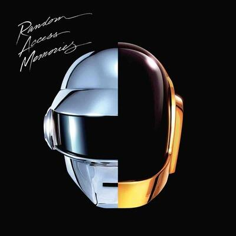
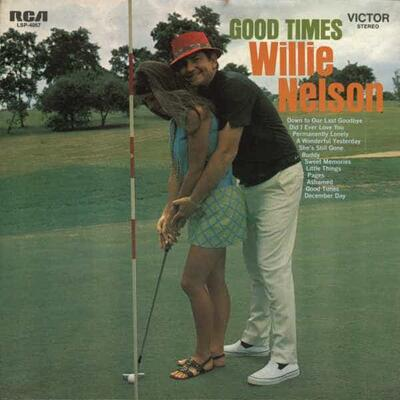
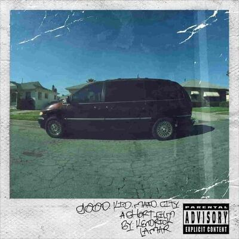
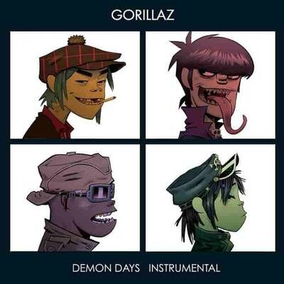
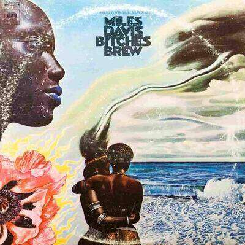

Introduction
Music nourishes souls. While all people prefer a specific type an go with it, I usually listen to variety of genres according to my mood. I will try to make my Discography as various as possible to cover my different eras. I use th semi-open headphones Samson SR850 as my main, I am willing to buy Beyerdynamic DT 1990 pro when I inheirt money or date a rich GF. Listen peacefully and have fun.
Discography
I will choose the five albums, and five singles that I remembered instantly while writing this. They may not be my best ever, but they are the ones that did hit my mind.
Daft Punk - Random Access Memories
This album is what future will be like. In 3490, when humans outgrown existence, people will still listen to this album and find ecstasy. RAM starts with "Giving life back to music", go through all the living sensations, ends with a new view for the "horizon".
Willie Nelson - Good Times
Good Times is maybe the weirdest on this list. I have never thought I will like Country Music, they were never good. However, the first time I heard "Buddy" in the TV Show "Parks and Recreation", I felt something weird; I instantly stopped the episode and looked up the song to hear. I was too amazed to the level of downloading the FLAC version for the album, and played it. The album was litearlly 30 minutes that make people in heaven feel jealous of earthers.
Kendrick Lamar - Good Kid, M.A.A.D. City
While Eminem is my favourite Hip-Hop artist, my favourite hip-hop album of all time is Kendrick's. "Black Boy Fly" was the song that I directly play in my celebrations, I hear it occasionly and remember all of my achievments. Besides, "Sing about me, I'm dying of thirst" is the song from the hell that makes heaven's people jealous.
Gorillaz - Demon Days
I can classify this album as "weird" but it turns on a weird neuron that gives me pleasure. I would label this album as "the moment between tipsiness and being drunk". A 50-minute moment that will send you to the nearest nebula.
Miles Davis - Bitches Brew
The end shall be with the end of everything. "Bitches Brew" is the only album from this list that I never recommended to a friend or a partner. Everytime I hear this album I feel jealousy. I feel I do not want any one to share it with me. This album is not just enjoyable, but I feel intimacy with it. I can hear it over and over and never get bored. If this album was a person, I would fall instantly in love with.
Eminem - When I'm Gone
While this is not the "best" song by Eminem, it gives me weird type of encouragement. When I was sick in bed for two weeks, I can remember me hearing this song multiple times. This is the best drug to have when you feel setbacked.
Pink Floyd - Shine On You Crazy Diamond
I can never express how this song feels. The only thing I can say is that it is a trip you will never feel bad you have taken, but you will repeat it one, twice, and infinitly and never get bored.
Queen - Bohemian Rhapsody & Killer Queen
This is the only pair here. I almost always listen to both followed, not only because they followed in my queue, but they make you feel you took both of the red pill and the blue pill.
Portishead - Roads
The title is very suitable for the song itself, the road you take when you put the song on can be measured in thousand of kilometers that you can walk through and never get tired. However, it always ends with the moment that you question your existence, your goals, your philosophies, your partners, your friends.
Evanescence - My Immortal
"There is just too much that time can not erase". Ben Moody's amazing music mixed with Amy Lee's god-like voice made the best feat in this song. This song helped me through some of depression moments by assisting me to let it out.
Others
Songs & Albums here are the ones that I downloaded in high quality. They are very good but they didn't make it to the top.
| Test Album Name | Author |